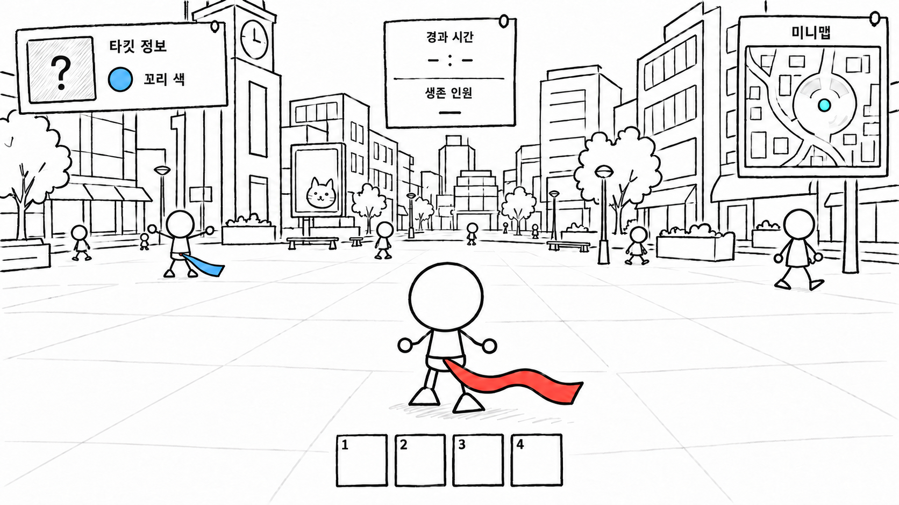

컨셉 기획_게임 개요와 핵심 재미
● 게임 소개
- 장르: 도시를 배경으로 타깃에게 접근해 꼬리를 빼앗는 3D 소셜 추격 게임.
- 플레이 구조: 각 플레이어가 지정된 타깃을 쫓는 동시에, 자신을 쫓는 상대를 경계한다.
- 기본 규칙: 타깃의 꼬리를 빼앗으면 타깃이 탈락하고, 내 꼬리를 빼앗기면 내가 탈락한다.
꼬리를 잡는 순간 저항 미니게임이 시작되며, 대결에서 이겨야 꼬리를 빼앗을 수 있다. - 플랫폼과 인원: PC, 6~8인 멀티플레이 목표.
- 공간: 광장, 거리, 골목과 실내가 연결된 도시에서 상대를 찾고 접근한다.

캐릭터 뒤에서 도시를 바라보는 3인칭 시점. 타깃의 꼬리 색을 단서로 상대를 찾으며 주변을 경계한다.
● 핵심 재미
- 쫓으면서 쫓기는 긴장감: 타깃만 쫓으면 자신에게 접근하는 상대를 놓칠 수 있고, 경계만 하면 타깃을 잡을 기회를 놓칠 수 있다.
두 상황을 함께 판단하도록 한다. - 접근과 추리의 심리전: 타깃에게는 접근 의도를 들키지 않아야 한다.
동시에 주변 인물의 움직임과 이벤트에서 얻은 정보로 누가 나를 쫓는지 판단한다. - 잡힌 뒤의 저항: 꼬리를 잡힌 상황에서도 미니게임으로 뿌리칠 기회를 준다.
한 번 잡혔다고 바로 탈락하지 않도록 한다. - 위험을 감수하는 선택: 정보를 얻거나 공통 목표를 쫓기 위해 움직일 때도 꼬리를 지켜야 한다.
얻을 기회와 주변의 위험을 함께 판단하도록 한다.
● 추격 관계
- 플레이어마다 타깃이 한 명씩 정해지며, 자신도 다른 누군가의 타깃이 된다.
모든 플레이어가 같은 관계로 연결된다. - 아래 그림은 한 명을 기준으로 본 관계다.
왼쪽과 오른쪽 인물도 각각 자신의 타깃을 쫓으면서 다른 플레이어에게 쫓긴다.
플레이어 한 명을 기준으로 본 관계
나를 쫓는 사람처음에는 누구인지 모름
나를 쫓음
나쫓으면서 쫓김
내가 쫓음
내 타깃꼬리 색을 알고 찾음
| 정보 구분 | 제공 내용과 의도 |
|---|---|
| 시작 정보 | 타깃의 꼬리 색을 알려준다. 타깃의 위치와 자신을 쫓는 사람의 정체는 처음부터 알려주지 않아, 직접 찾고 경계하게 한다. |
| 추가 정보 | 전화부스에서 추격자 이름, 추격자 위치, 타깃 위치 중 하나를 확인한다. 지금 필요한 정보를 선택해 추격과 경계에 활용한다. |